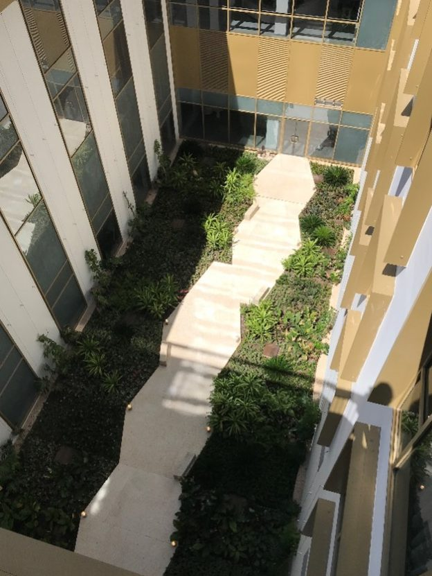
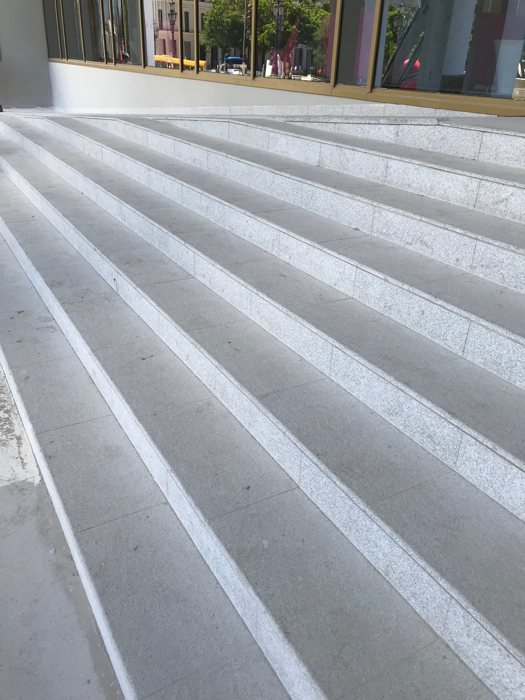
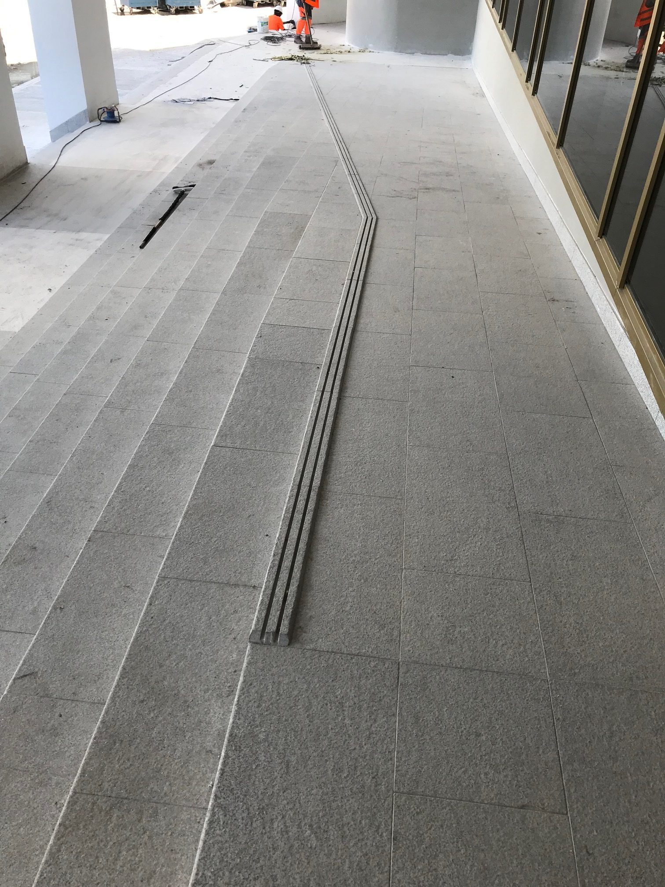
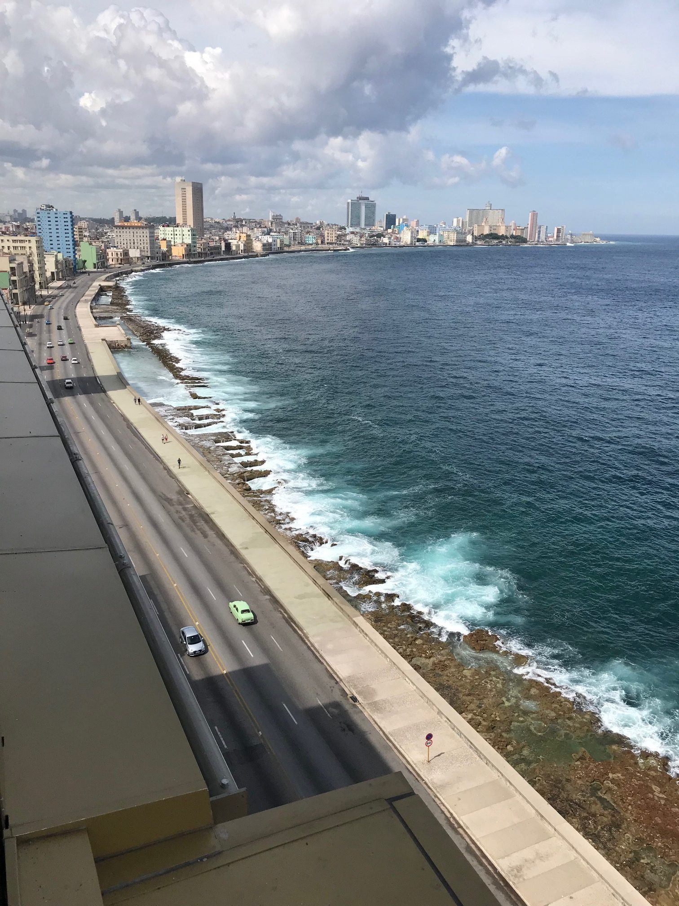
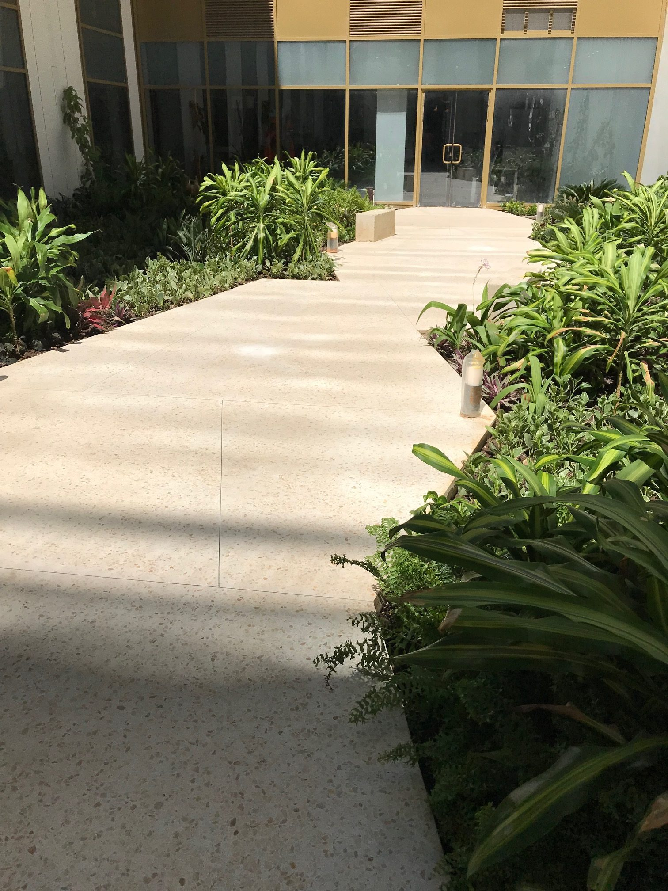
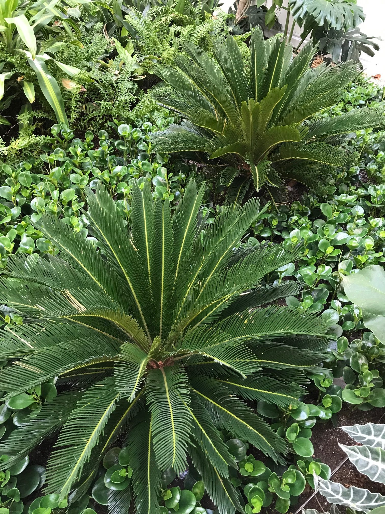
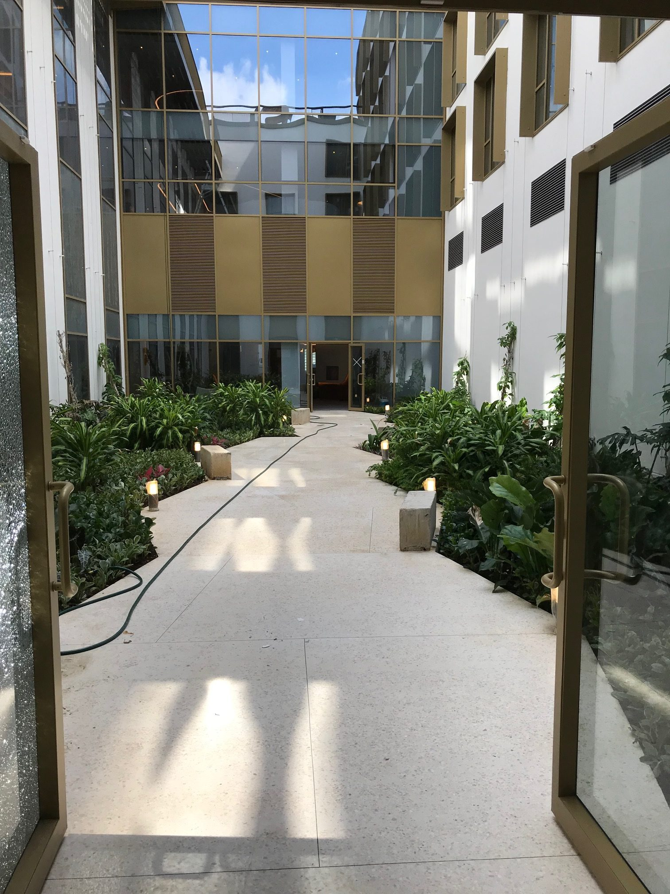
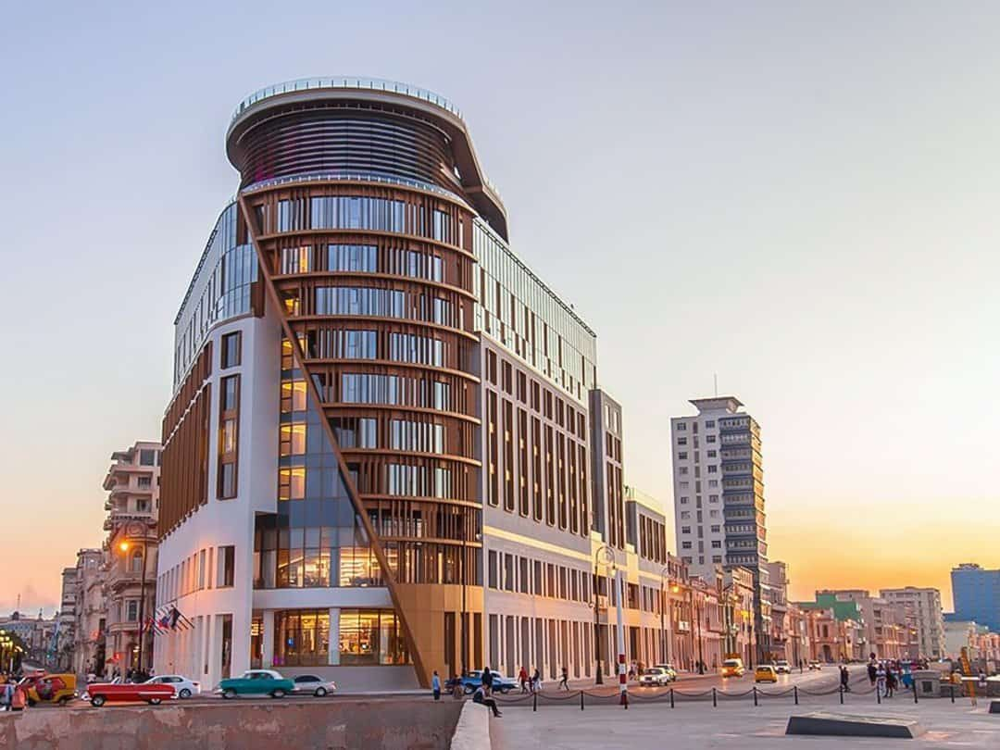

À l'angle du Paseo del Prado et du Malecón, l'hôtel s'organise autour d'un patio de 300 m², véritable cœur végétal reliant les deux ailes du bâtiment. Un cheminement central en terrazzo blanc traverse cet espace de 25 mètres au milieu d'une végétation tropicale luxuriante.
Planté en pleine terre, le jardin accueille Dracaena, Heliconia, fougères, Anthurium, Calathea et Begonia, ainsi que des Monstera deliciosa qui viendront habiller les câbles tendus en hauteur. Des bancs offrent des moments de pause dans ce lieu intime et traversant.
Les terrasses, exposées au vent marin, sont ponctuées de palmiers Areca. Depuis les terrasses hautes, le regard embrasse le front de mer, le Paseo del Prado, le Grand Théâtre et le Capitole. Réalisé avec Bouygues Bâtiment International pour Iberostar.






